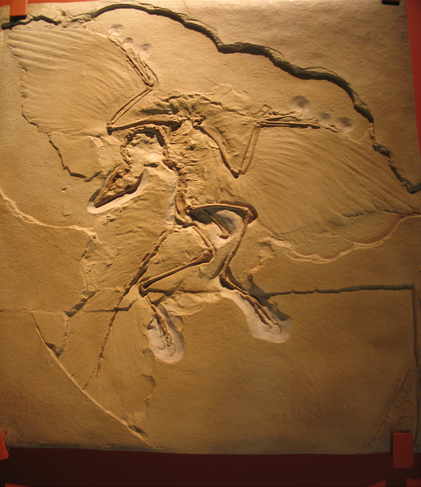

始 祖 鳥

始祖鳥尋找鳥與恐龍關係的第一到線索
19世紀的科學家，在比較了恐龍和現生鳥類的後肢骨骼後，發現這兩種在外型上截然不同的動物， 有許多相似之處，於是更大膽推論恐龍和鳥是有親緣關係的。
1861年，在德國索倫霍芬發現了一隻披有羽毛的小型恐龍化石。這隻體型像一隻鴿子的化石，口中長有尖牙， 批有羽毛的前肢和後肢的長度差不多，前肢長有利爪，還有相當完整堅挺的尾巴。這些都是小型肉食性恐龍的特徵。 科學家深信，如果不是那留在化石上的羽毛印痕，大家還誤以為那只是另一種恐龍而已， 這化石顯然是連接恐龍與鳥演化途徑的最佳證物，於是便以「始祖鳥」命名之。
始祖鳥的發現，更支持了鳥是從恐龍演化來的想法，這種想法也成為19世紀末到20世紀初的主流想法。